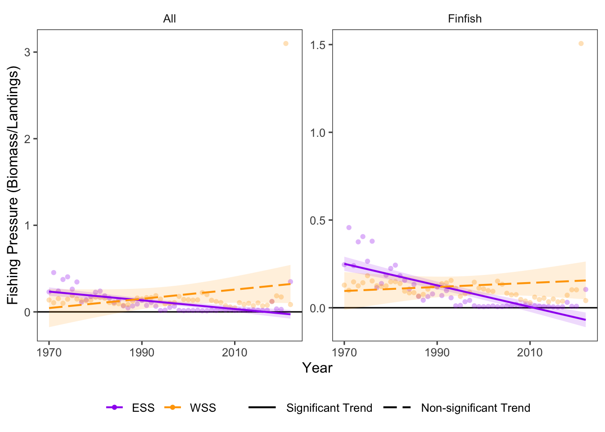

23 Fishing Pressure: Community
Data Type: Tabular Data (within eco_indicators)
Spatial Scope: Maritimes
Duration 1970-2022
Source: Bundy et al. 2017
23.1 Introduction to Indicator
Fishing pressure is a relative metric of intensity of exploitation on fished groups. Here, fishing pressure is presented per guild and calculated as a ratio: fishing pressure = total biomass / total biomass (Bundy, Gomez, and Cook 2017).
Since fishing pressure is calculated as a ratio, changes in fishing pressure can either result from changes to total landings, changes to total biomass, or both. Conversely, stability in fishing pressure does not guarantee that total landings and total biomass are also stable; if each value changes in the same direction, fishing pressure might remain stable.
This indicator focuses on the fishing pressure on the overall community, as indicated by fishing pressure for all speceis, finfish, and invertebrates.
23.2 View Data
library(tidyr)
library(plotly)
library(stringr)
plotly_df <- data@data %>% inner_join(global_cols3)
# function to create plot with dropdown menu ------------------------------
make_biomass_dropdown_plot <- function(df,
year_col = "year",
region_col = "region",
value_suffix = "_value") {
# convert to long format
long <- df %>%
janitor::clean_names() %>%
pivot_longer(
cols = ends_with(value_suffix),
names_to = "metric",
values_to = "value"
) %>%
# remove suffix
mutate(
metric = str_remove(metric, "_value")
) %>%
# drop NAs (some regions don't have data for some variables or years)
tidyr::drop_na(value)
# find all metrics and regions
metrics <- unique(long$metric)
regions <- unique(long[[region_col]])
# clean names for dropdown panels, helper
pretty_label <- function(x) str_to_title(gsub("fp_", "", x))
# build plot -----------------
p <- plot_ly()
# add line traces
for (metric_i in seq_along(metrics)) {
m <- metrics[metric_i]
for (region_i in regions) {
dat <- long %>%
filter(metric == m, .data[[region_col]] == region_i)
group_name <- unique(dat$region_group)
color <- unique(dat$color)
linetype <- unique(dat$linetype)
width <- unique(dat$linewidth)
# If a region truly has no data for that metric, add an empty trace
# (keeps trace indexing stable)
if (nrow(dat) == 0) {
dat <- tibble::tibble(!!year_col := integer(0), value = numeric(0))
}
p <- p %>% add_lines(
data = dat,
x = ~.data[[year_col]],
y = ~value,
name = as.character(region_i),
legendgroup = group_name,
legendgrouptitle = list(
text = ifelse(group_name == "ESS",
"Eastern Scotian Shelf Zones",
"Western Scotian Shelf Zones"
)),
showlegend = (metric_i == 1),
visible = (metric_i == 1),
line = list(color = color, dash = linetype),
hovertemplate = paste0("<b>", region_i,":</b> ","%{y:.3f}<extra></extra>") )
}
}
n_regions <- length(regions)
n_traces <- length(metrics) * n_regions
buttons <- lapply(seq_along(metrics), function(metric_i) {
vis <- rep(FALSE, n_traces)
shl <- rep(FALSE, n_traces)
idx_start <- (metric_i - 1) * n_regions + 1
idx_end <- metric_i * n_regions
vis[idx_start:idx_end] <- TRUE
shl[idx_start:idx_end] <- TRUE
list(
method = "update",
args = list(
list(visible = vis, showlegend = shl),
list(
title = pretty_label(metrics[metric_i]),
yaxis = list(title = "Fishing Pressure")
)
),
label = pretty_label(metrics[metric_i])
)
})
p %>%
layout(
barmode = "stack",
hovermode = "x unified",
title = pretty_label(metrics[1]),
xaxis = list(title = str_to_title(year_col)), # keep one bar per year
yaxis = list(title = "Fishing Pressure", fixedrange = TRUE),
legend = list(
x = 1.02, xanchor = "left",
y = 1, yanchor = "top",
groupclick = "toggleitem",
itemdoubleclick = FALSE
),
updatemenus = list(list(
type = "dropdown",
x = 0, xanchor = "left",
y = 1.15, yanchor = "top",
buttons = buttons
)),
margin = list(r = 180, t = 80),
# add horizontal line at 1
shapes = list(
type = "line",
xref = "paper",
yref = "y",
x0 = 0,
x1 = 1,
y0 = 1,
y1 = 1,
line = list(color = "black", width = 2, dash = "dash")
)
)
}
# usage:
p <- make_biomass_dropdown_plot(plotly_df)
p <- p %>% config(displayModeBar= F)
pFigure 23.1: Fishing pressure in all NAFO regions and Scotian Shelf regions over time.
23.3 Summary and Trends
Trend and summary values are automatically generated; data were last updated on marea package install on 2026-02-10
Estimates of fishing pressure are highly variable across time and between regions, and often exceed theoretical bounds (upper limit of 1), likely due to inaccurate estimates of total biomass (Fig. 23.1). Still, interpreting trends can reveal some insights into changes in fishing pressure to Scotian Shelf communities.
Within specific community types, fishing pressure increased in 0 groups in the Eastern Scotian Shelf (0 significant) and decreased in 2 groups (2 significant). In the Western Scotian Shelf, fishing pressure increased in 2 groups (2 significant) and decreased in 0 groups (0 significant) (Fig. 23.2).
The strongest increase in fishing pressure was on the All group in the WSS region, and the strongest decrease was on the Finfish group in the ESS region (Fig. 23.2).

Figure 23.2: Fishing Pressure for community groups over time in Scotian Shelf. Note that fishing pressure of invertebrates is not available at the ESS/WSS resolution in marea.
23.3.1 Summary Table by Region and Guild
Trends of Fishing Pressure over time for each guild and NAFO region within the Eastern and Western Scotian Shelf (1970-2022) are shown in the table below (Table 23.1).
| taxon | Eastern Scotian Shelf | Western Scotian Shelf |
|---|---|---|
| All |
4VN: -8.92e-03 ∗ 4VS: -3.49e-03 ∗ 4W: -7.54e-03 ∗ ESS: -4.99e-03 ∗ |
4X: 5.34e-03 WSS: 5.34e-03 |
| Finfish |
4VN: -9.76e-03 ∗ 4VS: -4.31e-03 ∗ 4W: -8.12e-03 ∗ ESS: -6.02e-03 ∗ |
4X: 1.15e-03 WSS: 1.15e-03 |
| Invertebrates |
4VN: 2.80e-02 ∗ 4VS: 1.38e-02 ∗ 4W: 1.18e-02 ∗ |
4X: 4.03e-01 ∗ |
23.4 Relevance to Research and Stock Assessments
Fishing pressure affects populations both by direct removal of individuals from the population, and by alteration of the size-structure and demographic properties of populations. Fishing pressure generally targets larger, older fish, thus truncating the age of the remaining population by removing mature and fecund individuals (Tu, Chen, and Hsieh 2018). High fishing pressure can contribute to the decline or collapse of exploited fisheries (Pinsky and Byler 2015; Essington et al. 2015).
23.5 Variable Definitions
| variable | description | unit |
|---|---|---|
| year | Year of data collection | |
| region | Area over which observations are summarized | |
| FP_{TAXON}_value | Fishing Pressure, calculated as Landings/Biomass | Proportion |